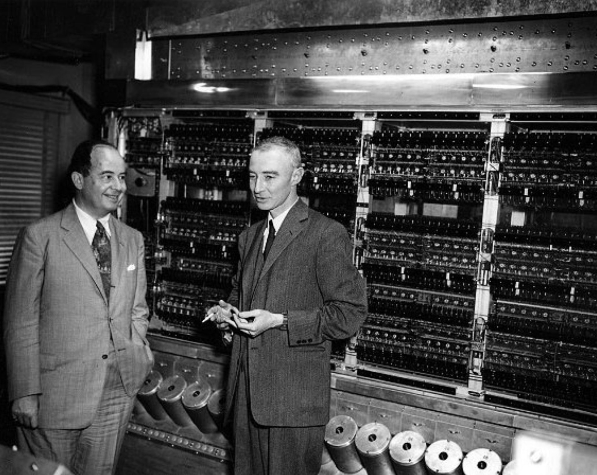
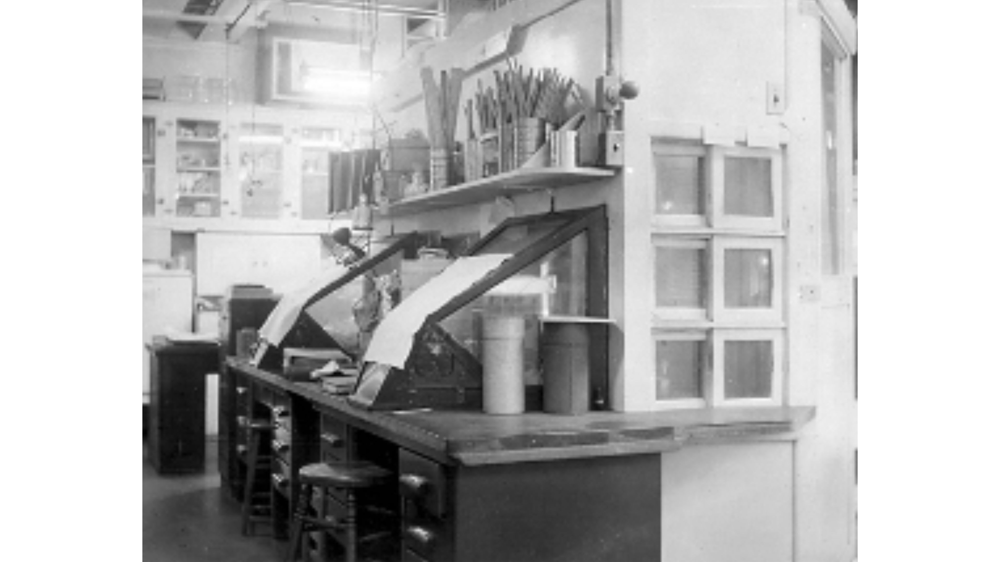
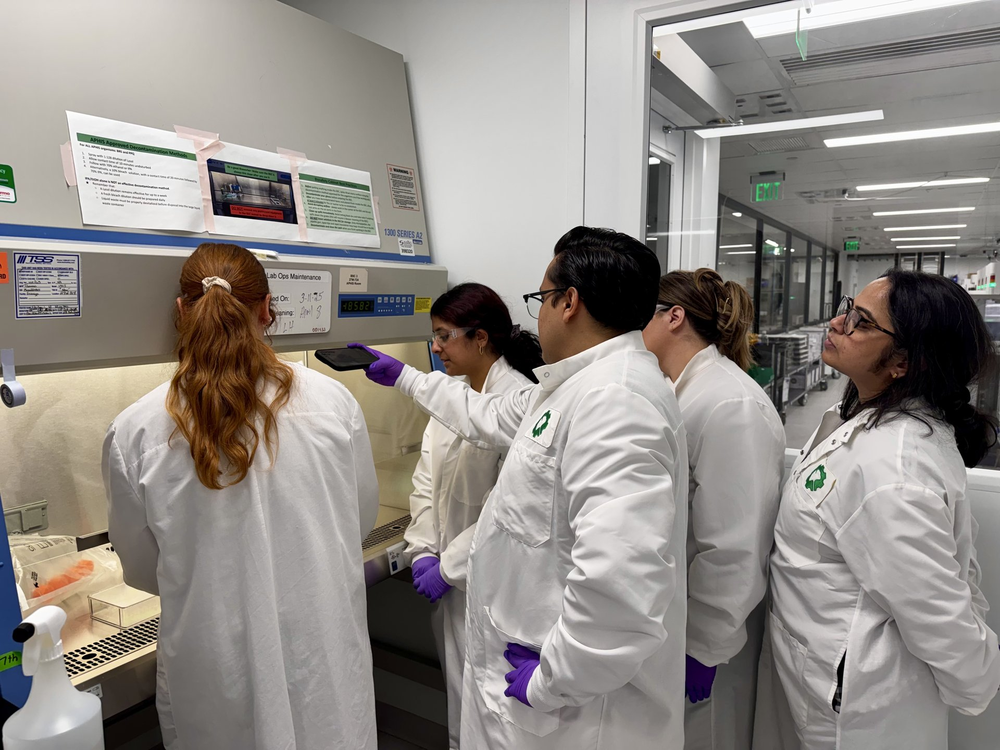

The Problem
The Problem
AI needs reliable biological training data. That data doesn't exist.
1956

2026

1956

2026

>70%
of researchers cannot reproduce others' experiments
Baker, Nature 2016
$28B/yr
cost of irreproducible US preclinical research
Freedman et al., PLOS Biology 2015
Biology still runs on 1950s hardware. The infrastructure for AI × Bio doesn't exist.